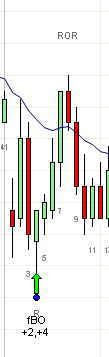

2BR 信号K线
https://ninetrans.blogspot.com/2012/01/2br-signal-bars.html

当两根K线重叠时，它们可能形成上/下空头信号或下/上多头信号。为简便起见，可以将其记为2K线反转（2BR）。2BR在较大时间周期上通常是反转K线，例如左侧10分钟图上的b4。有时，这些K线会形成交易区间K线，比如两端都有长影线的K线，甚至是十字星。同时打开多个图表来验证2BR的强度并不现实，因此在主图（如5分钟图）上正确判读2BR的能力非常重要。
2BR的第一个要求是第二根K线必须是光头光脚的（shaved）。第二个要求是第一根K线至少要比前一根K线深入两个tick。这两项要求确保你不仅仅是在旗形上方买入，而且一旦触发，行情会有后续推进。偶尔，如果你对信号有足够信心，第二根K线可以允许1个tick的偏差。
第三个要求是第二根K线和第一根K线大小几乎相同，且错位不超过一两个tick。（5分钟图的b8、b9大小相同，错位2t）。
在初期，通过对比10分钟图上的K线可能会有所帮助。但最好在交易日结束后再做这件事，因为大多数交易者同时查看多个图表会损害其交易表现。